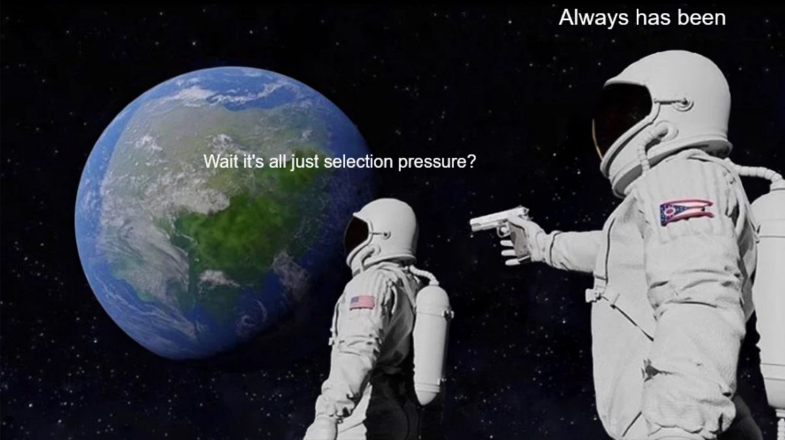

Selection pressure as the universal mechanism
The universe fundamentally forbids structure. The Second Law of Thermodynamics (Entropy) is the rule; complexity is the violation.
How does complexity persist in a universe that wants to dissolve it?
Two strategies:
The second strategy defines telic systems—goal-directed agents that subordinate thermodynamics to computation. Bacteria, civilizations, corporations, future AI. Life is one instance. The pattern is universal.
Selection is the filter that determines which telic systems persist. It removes configurations that fail to navigate the constraints.
Every concept in this framework is just Selection operating on a different substrate.
| Concept | The Selection Mechanism |
|---|---|
| Evolution | Selection on Genes |
| Markets | Selection on Firms |
| Science | Selection on Theories |
| Culture | Selection on Memes |
| AI Safety | Selection on Architectures |
| The Dilemmas | The Constraints telic systems must navigate |
| The Virtues | The Optimal Syntheses (IFHS—solutions to the Dilemmas) |
| Axiological Malthusian Trap | Selection Inverted (Homeostasis over Metamorphosis) |
| The Fourth Branch | Artificial Selection (Institutionalized) |
It is all one thing.
Civilization reduces the pressure of natural selection. We built walls, granaries, medicine, and laws. We achieved Abundance.
But selection doesn't disappear. It shifts.
Under scarcity, selection favors Metamorphosis—growth, risk-taking, capability-building. Without these traits, you die.
Under abundance, selection favors Homeostasis—comfort, safety, risk-avoidance. The immediate environment rewards these traits. Growth becomes optional; comfort becomes cheap.
This is the Axiological Malthusian Trap: selection still operates, but now it selects for traits that lead to long-term extinction.
The modern West accelerated this inversion. Because natural selection was cruel, we decided that all selection was evil. We built a worldview based on feedback severance—systematically decoupling outcomes from inputs:
Note: Civilization should reduce the cost of failure—that's what enables complex selection (ideas dying instead of people). The error is severing feedback entirely. When outcomes no longer depend on inputs, selection cannot distinguish fit from unfit. Entropy wins by default.
We tried to be kind. But by severing feedback loops, we created a Hospice—a system where nothing fails, nothing learns, and everything slowly decays.
The compassionate move (severing feedback) is the cruelest move (ensuring decay).
We cannot restore natural selection. We are too fragile, and it is too cruel.
We cannot stay in the Hospice. It is terminal.
The only path forward is Artificial Selection—engineered selection pressure that favors Metamorphosis without lethality.
Civilization's challenge is engineering selection that favors the right traits.
The Fourth Branch is the institution responsible for maintaining artificial selection. It ensures the system continues to select for competence, truth, and capability—even when abundance would otherwise invert selection toward comfort.
Every problem in these essays is selection operating on a different substrate. The dilemmas are the constraints. The virtues are what passes over deep time. The trap is selection inverting under abundance. The fix is engineering selection that favors the right traits.
Physics sets the constraints. Selection enforces them.
This draws from Aliveness, a framework for understanding what sustains organized complexity over time.
Foundations series: The Question → Selection → The Physics
Related: